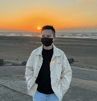

個人簡介
我是護理師，護專畢業後一直在醫療環境過著輪班的日子，且一邊在救護車公司兼職，這樣的生活維持了許多年，因見過許多生老病死，覺得能有不一樣的人生，我轉換了跑道，到殯葬業上班，但後來發現這個行業不適合自己，於是我在2021年重返校園讀書，就讀台中科大在職專班的資管系，且在2023年畢業後下定決心走上程式設計的道路，開始自學程式，期望能學習不同的程式語言，成為軟體工程師，做出更好的project。
為了成為軟體工程師，做過什麼努力？
我把大部份的社群軟體都刪除了，避免自己有多餘的時間去滑手機，且有看過彭彭老師 HTML/CSS、javascript的youtube課程、有在Udemmy購買網頁全端課程，目前已上完70%，但因為曾經被javascript繞暈，所以一次看不懂的部分，我會重複看到我能理解為止，確定自己融會貫通，雖然目前還沒辦法獨自完成project，但我會更努力去學習、練習。
如果參與這個訓練，會怎麼安排學習時間？
我是在職中準備轉職，每天上班時間16:00-24:00，目前我安排的時間是10:00-12:00、01:00-04:00學習新的內容，其餘的時間ex:上班的瑣碎時間，或是在健身房跑步的時間，我會複習筆記的內容。
另外，我每個月休假大約十天，休假的時候，我會學習12小時以上的時間，所以如果有幸能參與訓練，我會繼續維持這個模式。
是否有想要加入的公司？為什麼想加入該公司？
我想加入位於台北市的點點印公司(https://www.104.com.tw/company/cyiomhs?jobsource=index_s)，因為我喜愛拍照及旅遊，我認為把自己拍攝的照片，變成一本故事書是很有意義的事情。
請描述一件產生明顯負面情緒的經歷，如何處理該情緒？
自學程式的這段時間，因為臨近30歲了，在原本的行業也待了很長的一段時間，加上身邊沒有一起學習的對象，所以轉職這件事情，家人、朋友都不看好，偶爾遇到困難時，我會感到迷茫及困惑，甚至會害怕失敗，也曾想過放棄，但後來我學會藉著運動抒發這些負面的情緒，也藉著看勵志的文章、聽勵志的歌，強大自己的心態，我相信只要我一直堅持著，我的未來就不是夢。
關於這份申請網頁，分享一個開發時的技術心得。
這份申請網頁用了很基本的HTML/CSS，雖然是很基礎的知識，但還是會需要邊做邊查一些資料，甚至會知道自己欠缺哪個部份的技術，且我也從中學習到了使用GitHub部署我的個人網站，我認為自己查資料實作，對學習很有幫助，是很棒的學習方式。
請用簡短兩三句話，描述對你而言，最重要的一項人際交往原則。
待人真誠是我認為最重要的人際交往原則，因為誠懇是發自內心的善良。
其他想要對我們說的事情？
我希望我有這個榮幸可以成為第五屆的學員，如果能幸運申請成功，我會加倍努力、加倍認真地完成每週進度，達成自己給自己的轉職目標，希望彭彭老師可以給我這個機會，謝謝。